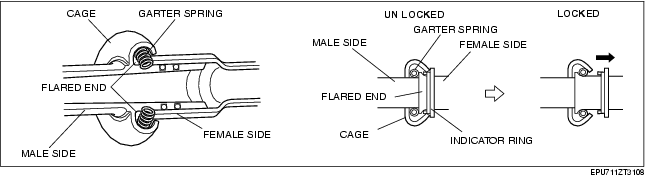

REFRIGERANT LINES CONSTRUCTION
id071100100700
• Spring-lock coupling is used for pipe-to-pipe connections. As a result, pipes can be connected easily, maintenance of torque is unnecessary, and serviceability is improved.
• There is a garter spring in the cage on the female side (cooler pipe or cooler hose (LO)) of spring-lock coupling type and the end of the pipe on the male side (A/C unit or condenser) is flared. When the pipes are being connected, the flared end of the male side forces the garter spring on the female side to expand, and by fully inserting the male side into the female side, the flared end is locked by the garter spring.
• When the cooler pipe or cooler hose (LO) is replaced, the additional indicator ring comes out after connection, indicating that the flared end is locked.
